fruits de saison
Notre sélection du jour
La poire
est le fruit à pépins comestible au goût doux et sucré, produit par le poirier commun, arbre de la famille des Rosaceae. Le terme de « poire » désigne aussi par extension le fruit de tout arbre du genre Pyrus. Parmi les 68 espèces de Pyrus, assez peu sont cultivées pour leurs fruits comestibles. il y a différentes variétés
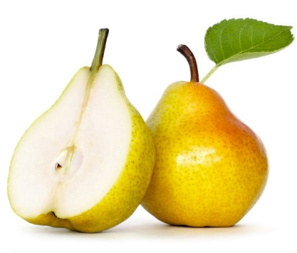
La pomme
est un fruit comestible produit par un pommier. Les pommiers sont cultivés mondialement et représentent l'espèce la plus cultivée du genre Malus. L'arbre est originaire d'Asie centrale, où son ancêtre sauvage, le Malus Sieversii peut encore être trouvé de nos jours. Les pommes sont cultivées depuis des milliers d'années en Asie et en Europe et ont été importées en Amérique du Nord par les colons européens. il y a différentes variétés
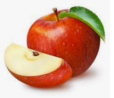
L’orange
ou orange douce est le fruit de l'oranger (Citrus sinensis L.) de la famille des Rutacées. Comme pour tous les agrumes, il s'agit d'une forme particulière de baie appelée hespéride. Il existe plusieurs variétés d’oranges, classées en quatre groupes variétaux.Comestible, elle est réputée pour sa grande teneur en vitamine C, bien que celle-ci ne soit pas particulièrement élevée par rapport à d'autres fruits et légumes. C'est le quatrième fruit le plus cultivé au monde. Il y a différentes variétés
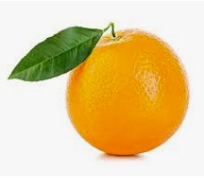
La tomate
(Solanum lycopersicum L.) est une espèce de plantes herbacées du genre Solanum de la famille des Solanacées, originaire du Nord-Ouest de l'Amérique du Sud1, largement cultivée pour son fruit. Le terme désigne aussi ce fruit charnu. La tomate se consomme comme un légume-fruit, crue ou cuite. Elle est devenue un élément incontournable de la gastronomie dans de nombreux pays, et tout particulièrement dans le bassin méditerranéen. Il y a différentes variétés
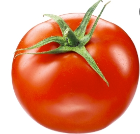
La prune
est un fruit de forme ovale, plus ou moins allongée, de couleurs diverses, jaunes, bleues ou rouges, et de calibre moyen. La chair est généralement ferme et de couleur jaune à jaune-verdâtre. Elle peut être consommée fraîche, séchée, ou cuite. Il y a différentes variétés
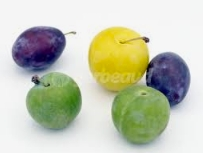
La fraise
est un fruit rouge issu des fraisiers, espèces de plantes herbacées appartenant au genre Fragaria (famille des Rosacées), dont plusieurs variétés sont cultivées.
Il y a différentes variétés
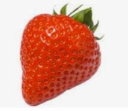
Le melon
(Cucumis melo) est une plante herbacée annuelle originaire d'Afrique intertropicale, appartenant à la famille des Cucurbitacées et largement cultivée comme plante potagère pour son fruit comestible.La tige n'est pas volubile mais la plante peut grimper en s'accrochant à des supports grâce à des vrilles simples. Des mutants sont connus à entre-nœud court. Les feuilles sont généralement entières assez arrondies,parfois assez fortement découpées. Le terme désigne aussi le fruit climactérique lui-même très savoureux, sucré et parfumé. Il y a différentes variétés
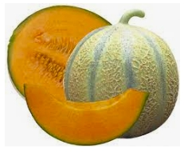
La pastèque
(Citrullus lanatus (Thunb.) Matsum. & Nakai, 1916), aussi appelée melon d'eau, est une espèce de plantes herbacées de la famille des Cucurbitacées, originaire d'Afrique de l'Ouest,largement cultivée pour ses gros fruits lisses, à chair rouge, jaune, verdâtre ou blanche et à graines noires ou rouges. Il y a différentes variétés
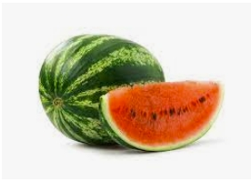
La groseille
est un fruit comestible du groseillier, petite baie lisse et brillante, de couleur blanche ou rouge, de saveur acidulée, se présentant en grappe, utilisée pour fabriquer de la confiture et des sirops. Il y a différentes variétés
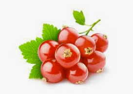
Le pamplemousse
Fruit du pamplemoussier, de plus grande taille que le pomelo (ou grapefruit) et qui n'acquiert de bonnes qualités gustatives que dans les régions tropicales chaudes et humides. Il y a différentes variétés
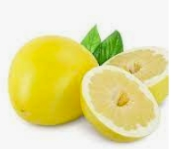
Le citron
Fruit du citronnier, de couleur jaune, de forme ovale, avec un mamelon au sommet et dont la pulpe contient un jus acide, riche en vitamine C et agréablement parfumé. Il y a différentes variétés
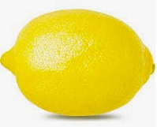